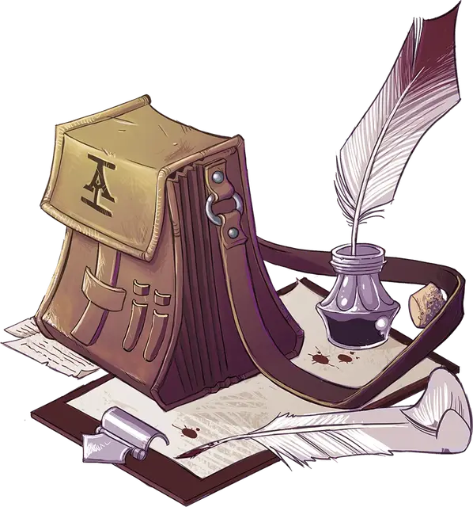

Портфель с документами
Documancy Satchel
Чудесный предмет, редкость варьируется (2-й ранг - обычный, 3-й ранг - необычный, 4-й ранг - редкий)

При получении 2-го ранга ваш Портфель с документами становится обычным магическим предметом, позволяющим вам волшебным образом отправлять и получать документы из головного офиса через специальную сумку. Ваш портфель с документами волшебным образом создает предварительно написанные и готовые к подписанию контракты по вашему запросу, покрывая наиболее распространенные контрактные потребности. Она также иногда выдаёт клейкие стикеры, с напечатанной на них полезной информацией и вдохновляющими цитатами из головного офиса.
Портфель хранения. При получении 3-го ранга ваш портфель с документами получает дополнительные свойства и становится необычным магическим предметом. Один из отделов сумки теперь функционирует как сумка хранения [bag of holding].
Кроме того, вы можете использовать Действие, чтобы вытащить из портфеля с документами свиток с заклинанием понимание языков [comprehend languages]. Свиток исчезает при использовании или спустя 10 минут после его появления. Это свойство портфеля не может быть использовано снова до следующего рассвета.
Хьюмидор для свитков. При получении 4-го ранга ваш портфель с документами получает дополнительную силу и становится редким магическим предметом. Отделы внутри портфеля соединяются с местом в межпространстве, что позволяет ему вмещать до тридцати документов или свитков заклинаний. Размещение одного документа в Хьюмидоре - это Действие. Вынимание желаемого свитка - это Бонусное действие.